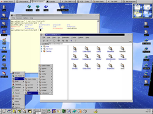
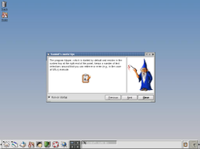
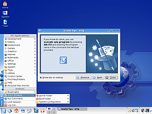
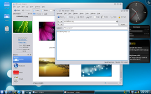
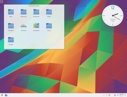

Geschichte von KDE
Programmierer gesucht!¶
Mit diesem Satz hat Matthias Ettrich am 14. Oktober 1996 um exakt 3:00 Uhr morgens einen Meilenstein in der Geschichte von KDE und Linux gelegt. Er suchte nach Programmierern für ein neues Projekt, das "Kool Desktop Enviroment". "A GUI for endusers" - so beschrieb er sein neues Vorhaben. Er erklärte, dass es zwar einige - aber im Aussehen und in der Bedienung sehr unterschiedliche - GUIs (grafische Benutzeroberflächen) für Linux gäbe, aber keinen einheitlichen Desktop. Dieser sollte auf Basis einer völlig neuen Technologie, der Bibliothek Qt von Trolltech realisiert werden.
Zitat:
"Meine Idee ist NICHT eine komplette grafische Oberfläche für UNIX-Systeme oder System-Administratoren zu entwerfen. Für diese Art von Nutzern ist eine zweckorientierte Umgebung mit tausend Tools und Programmiersprachen besser. Die Idee ist eine grafische Benutzeroberfläche für JEDEN BENUTZER zu schaffen. Jemand, der mit Linux im Web surfen möchte oder ein paar Briefe schreiben und einige nette Spiele spielen möchte."
KDE 1.x¶
 Der Weg zu KDE 1.0 war sehr steinig. Die Entwickler mussten ständig gegen eine Welle von Kritik ankämpfen. Einige Punkte, wie etwa die damals noch unfreie Grafikbibliothek Qt für einen quelloffenen Desktop zu benutzen, verwirrte viele Nutzer. Aus diesem Grund wurde das GNOME-Projekt ins Leben gerufen - es sollte ein freies Grafik-Toolkit verwenden, aber trotzdem eine vollwertige Desktopumgebung bereit stellen.
Dem dadurch entstandenen Druck auf Trolltech und der Überzeugungsarbeit der KDE-Entwickler war es zu verdanken, dass Trolltech sich schließlich im April 1998 dazu entschied, Qt in einer speziellen freieren Version zur Verfügung zu stellen, die die Ansprüche der Community weitestgehend erfüllte. Trotzdem wurde GNOME weiterentwickelt.
Am 12. Juli 1998 wurde die Version 1.0 von KDE der Linux-Gemeinde sprichwörtlich vor die Nase gesetzt.
KDE 2.x¶
 Mit der Version 2.0 von KDE, welche am 23. Oktober 2000 erschien, setzte das KDE-Entwickler-Team einen gewaltigen Meilenstein. Linux wurde mit KDE einen Teil seines BashBoy-Klischees los. Jetzt zeigten auch große Distributoren wie Debian und SuSE Interesse. KDE fand schnell Freunde bei Neuanwendern und Spielefreaks. Mit Konqueror wurde ein Webbrowser geboren, der unter UNIX-artigen Systemen einfach gebraucht wurde, da Mozillas Produkte noch nicht fertig waren und der Netscape Navigator einigen nicht zusagte.
Das komplette KDE-Team wirkt selbstbewusster, die Ereignisse der Vergangenheit waren vergessen. KDE schlüpfte mit dieser Version aus den Kinderschuhen und konnte zu einem mächtigen Desktop heranwachsen.
KDE 3.x¶
Der KDE-Desktop etablierte sich langsam in vielen Bereichen. SuSE setze mehr und mehr auf die KDE-Anbindung,  die Firma Novell nutzte KDE zum eigenem Vorteil, baute Funktionen ein und gab diese an die Community weiter. Mit einem der beliebtesten Programme, Amarok, gewann KDE mehr und mehr Fans. Ein neues Drucker-Framework bekam KDE in der Version 3.0, welche am 28. Januar 2003 erschien. Der Webbrowser Konqueror konnte nun DHTML interpretieren. Das Design von KDE 3 wechselte in den Versionen 3.2 (3. Februar 2004). Nun konnten sich die Entwickler nach den schwierigen Jahren wieder auf die eigentliche Desktop-Umgebung konzentrieren. Mit KDE 3.5 (29. November 2005) gehörten außerdem 3 weitere Programme aus dem Edutainment-Bereich (KGeography, Kanagram und blinKen) sowie das Desktop-Widget-Tool SuperKaramba standardmäßig zu KDE.
KDE Plasma Workspaces 4¶
Am 11.Januar 2008 ist nach längeren Arbeiten mit KDE 4.0.0 das erste Release der neuen Serie KDE 4 erschienen. KDE 4 wurde auf Basis des aktuellen Qt-Frameworks in der Version 4 entwickelt, viele Komponenten wurden komplett neu programmiert, darunter in erster Linie der Desktop Plasma. Der KDE Fenstermanager KWin beherrscht nun auch Compositing und bietet somit eigene Arbeitsflächeneffekte. Mit Oxygen wurde ein einheitliches Design integriert, das Fensterdekorationen, Bedienelemente, Farben und Icons umfasst. Somit haben alle Anwendungen ein perfekt aufeinander abgestimmtes Look&Feel. Bei der Entwicklung der Anwendungen wurde mehr Wert auf Benutzbarkeit gelegt und zum Beispiel mit Dolphin ein neuer Dateimanager entwickelt sowie mit Kickoff ein neues K-Menü integriert.
Mit der Veröffentlichung von KDE 4.0 kehrte die KDE Community wieder zu einem zeit-basierten Release-Plan zurück. In Zukunft werden die Feature-Releases im Halbjahresabstand (Januar und Juli) erfolgen und Bugfix-Releases monatlich veröffentlicht.
KDE 4 wird nun auch auf andere Plattformen portiert. Mit der Version 4.1 vom 29. Juli 2008 wurde ein Teil der Software auf Windows portiert. Auf dem Apple MacIntosh ist KDE noch weit vom produktiven Einsatz entfernt. Am weitesten fortgeschritten ist die Portierung auf OpenSolaris. Hier kann man schon fast alles produktiv nutzen.
Die erste auch für Endanwender empfohlene Version KDE 4.2 erschien am 27. Januar 2009. In dieser Version sind fast alle Funktionen von KDE 3.x portiert worden und alle neuen Bestandteile, wie der Desktop Plasma, haben einen stabilen Status erreicht.
Um den Veränderungen in der Community - insbesondere dem starken Wachstum und der damit einhergehenden Verzweigung der Einzelprojekte - gerecht zu werden, wurde am 24. November 2009 eine Umbenennung bekannt gegeben. Wichtigste Änderung war dabei, dass von nun an mit dem Begriff "KDE" die Gemeinschaft an sich gemeint ist. Des Weiteren heißt die von dieser Gemeinschaft halbjährlich herausgegebene Sammlung verschiedener Software-Komponenten nun "KDE Software Compilation" (KDE SC). Weitere Informationen hierzu finden sich im entsprechenden Ikhaya-Artikel.
KDE Plasma 5¶
|  |
| KDE Plasma 5.4 in Kubuntu 15.10 |
Im Sommer 2014 wurde erstmals die Version 5 von KDE Plasma veröffentlicht, die auf der Version 5.x von Qt aufbaut. Kubuntu 15.04 war eine der ersten Distributionen, die ihn praktisch einsetzen. Gegenwärtig beinhaltet die Version Kubuntu 16.04 LTS Plasma 5.5. Weitere Details sind dem ausführlichen Artikel KDE Plasma zu entnehmen.
Links¶

- Erstellt mit Inyoka
-
 2004 – 2017 ubuntuusers.de • Einige Rechte vorbehalten
2004 – 2017 ubuntuusers.de • Einige Rechte vorbehalten
Lizenz • Kontakt • Datenschutz • Impressum • Serverstatus -
Serverhousing gespendet von